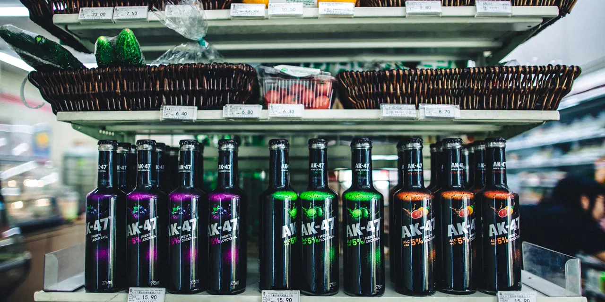

스플래시 베버리지 그룹을 볼 때는 음료 브랜드 이름부터 외우면 순서가 빗나갑니다. 이 회사에는 코파 디 비노 같은 와인 제품과 여러 음료·주류 브랜드 이야기가 붙어 있지만, 지금 주주가 먼저 확인해야 할 것은 브랜드 매력보다 회사가 정상적으로 유통을 다시 돌릴 수 있는지입니다. 소비재 회사는 제품이 매대에 들어가고, 재주문이 나오고, 총마진이 남아야 의미가 있습니다.
SBEV는 2026년 5월 20일 제출한 10-Q에서 2026년 1분기 순매출이 4,224달러였다고 밝혔습니다. 전년 동기 순매출 68,606달러와 비교하면, 투자자가 가장 먼저 봐야 할 질문은 성장률이 아니라 매출 재개입니다. 이 숫자는 “작은 브랜드가 다음 대형 음료주가 될 수 있나”보다 “현재 영업 체력이 얼마나 남아 있나”라는 질문에 가깝습니다.
그래서 이 글의 결론은 처음부터 조심스럽습니다. 스플래시 베버리지는 반등 가능성이 완전히 없는 종목이라기보다, 반등을 말하기 전에 유동성, 부채, 유통 회복, 희석 가능성을 먼저 통과해야 하는 고위험 소비재 종목입니다. 소비재 투자에서는 예쁜 브랜드보다 반복 판매와 재무 생존성이 먼저입니다.
매출보다 먼저 볼 것은 영업 재개입니다

소비재 회사의 매출은 단순히 제품을 갖고 있다고 생기지 않습니다. 유통 채널이 열려야 하고, 물량을 납품할 현금이 있어야 하며, 매장이나 온라인 채널에서 재주문이 나와야 합니다. 스플래시 베버리지의 2026년 1분기 순매출 4,224달러는 회사가 아직 정상적인 판매 흐름을 회복했다고 보기 어렵다는 신호입니다.
같은 분기 매출원가는 2,376달러였고, 매출총이익은 1,848달러였습니다. 금액 자체가 매우 작기 때문에 총마진율을 계산해도 투자 판단에 큰 의미가 없습니다. 중요한 것은 다음 분기부터 유통 채널이 실제 주문으로 다시 살아나는지, 그리고 판매량이 늘어날 때 판촉비와 물류비를 감당할 수 있는지입니다.
주주가 확인해야 할 첫 번째 변화는 매출이 몇 배 늘었다는 문구가 아닙니다. 매출이 최소한 분기 단위로 의미 있는 규모까지 회복되는지, 재고가 움직이는지, 매출채권이 쌓이는지, 그리고 매출총이익이 운영비를 조금이라도 따라가기 시작하는지입니다. 현재 숫자에서는 제품 스토리보다 영업 재개 여부가 훨씬 중요합니다.
10-Q 숫자는 생존 질문을 던집니다
관련 영상
스플래시 베버리지 그룹 SBEV 기업 분석 한국어 롱폼 영상
2026년 1분기 10-Q에서 더 무거운 숫자는 손실과 부채입니다. 회사는 2026년 1분기 계속영업 기준 순손실 213.6만 달러를 기록했습니다. 보통 소비재 회사라면 매출이 커지면서 운영비를 흡수해야 하는데, 현재 SBEV는 매출 규모가 운영비를 설명하기에 너무 작습니다.
현금도 넉넉하지 않습니다. 2026년 3월 31일 기준 현금 및 현금성 자산은 38.1만 달러, 총 유동자산은 70.9만 달러였습니다. 반면 총 유동부채는 1,697.2만 달러였습니다. 이 차이는 단순히 나쁜 분기 실적이 아니라 재무 구조 자체가 주가의 핵심 변수라는 뜻입니다.
운영현금흐름도 부담입니다. 같은 보고서에서 계속영업 기준 영업활동 현금 유출은 약 93.0만 달러였습니다. 회사는 보통주 발행으로 137.2만 달러를 조달했고, 일부 부채 원금을 상환했습니다. 즉 현재 SBEV의 주주가 봐야 할 것은 “음료가 잘 팔릴까”와 동시에 “그 판매가 시작되기 전까지 추가 자금 조달이 얼마나 필요할까”입니다.
브랜드 포트폴리오는 아직 증명 전입니다
스플래시 베버리지의 이야기는 브랜드 포트폴리오에서 출발합니다. 코파 디 비노는 잔 단위 와인 포맷으로 설명되고, 과거에는 탭아웃 관련 라이선스도 있었습니다. 다만 10-Q에는 탭아웃 라이선스 계약이 2024년 1분기에 종료됐고, 관련 정산 논의가 이어지고 있다는 내용이 나옵니다. 또한 SALT Tequila USA 투자자산은 2026년 1분기에 25만 달러 손상 처리되어 장부가가 0으로 내려갔습니다.
이 대목이 중요합니다. 브랜드가 많다는 것은 선택지가 많다는 뜻일 수 있지만, 동시에 집중력이 약하다는 뜻일 수도 있습니다. 작은 소비재 회사는 유통력과 현금이 부족하면 여러 브랜드를 동시에 키우기 어렵습니다. 어떤 브랜드를 먼저 밀고, 어떤 채널에서 반복 주문을 만들며, 어떤 재고를 줄일지 선택해야 합니다.
소비재에서 성공한 소형 브랜드는 대개 하나의 명확한 반복 구매 이유를 갖습니다. 에너지 음료라면 기능성과 습관, 탄산음료라면 가격과 유통력, 간편식이라면 재구매율이 중요합니다. SBEV는 아직 이 중 어떤 축이 분명한 수치로 회복되고 있는지 투자자에게 충분히 보여줘야 하는 단계입니다.
희석 가능성은 반드시 따로 봐야 합니다
SBEV 같은 소형주에서 주주가 가장 자주 놓치는 부분은 “회사가 살아남는 것”과 “기존 주주의 몫이 커지는 것”이 다르다는 점입니다. 회사가 자금을 조달해 영업을 이어갈 수는 있습니다. 하지만 그 과정이 계속 주식 발행이나 전환증권에 기대면, 기존 주주의 지분 가치는 희석될 수 있습니다.
10-Q에는 2026년 3월 31일 기준 전환사채 잔액이 보통주 838만8,296주로 전환될 수 있다는 문구가 있습니다. 이 숫자는 현재 발행주식 구조와 함께 봐야 합니다. 주가가 낮은 상태에서 전환과 발행이 이어지면, 매출이 조금 회복되어도 주당 가치가 같이 회복되지 않을 수 있습니다.
따라서 SBEV를 보는 순서는 명확합니다. 첫째, 유통 매출이 실제로 회복되는지 봅니다. 둘째, 현금이 얼마나 남았고 운영현금 유출이 줄어드는지 봅니다. 셋째, 부채와 전환증권이 보통주로 얼마나 바뀔 수 있는지 봅니다. 넷째, 다음 자금 조달이 기존 주주에게 얼마나 불리한 조건인지 확인합니다.
비교종목은 회복 기준을 보여줍니다
관련종목을 같이 보는 이유는 음료 사업의 성공 조건을 비교하기 위해서입니다. 셀시어스 홀딩스는 기능성 음료가 유통 채널 확대와 반복 구매를 만나면 얼마나 빠르게 커질 수 있는지 보여준 사례입니다. 하지만 셀시어스도 유통 파트너, 재고 조정, 성장 둔화 구간에서 주가가 크게 흔들릴 수 있습니다.
코카콜라와 펩시코는 완전히 다른 체급의 기업입니다. 이들은 브랜드, 가격 결정력, 글로벌 유통망, 현금흐름이 갖춰진 소비재 기업입니다. SBEV가 이들과 직접 비교될 수 있다는 뜻이 아닙니다. 오히려 차이를 보라는 뜻입니다. 큰 음료 회사들은 매대 접근권과 반복 구매를 이미 확보했고, SBEV는 그것을 다시 증명해야 합니다.
결론적으로 스플래시 베버리지 그룹은 “브랜드가 있으니 언젠가 팔릴 수 있다”는 식으로 접근하면 위험합니다. 지금은 판매 회복, 현금, 부채, 전환 가능 주식 수가 모두 주가를 누르는 구간입니다. 다음 분기부터 순매출이 의미 있는 수준으로 회복되고, 현금 유출이 줄고, 자금 조달 조건이 개선된다면 이야기는 달라질 수 있습니다. 그러나 그 전까지는 기대보다 생존성 검증을 먼저 두는 편이 맞습니다.
이 글은 SBEV 또는 관련종목에 대한 매수·매도 추천이 아닙니다. 투자 판단 전에는 최신 SEC 공시, 회사 발표, 본인의 위험 감내 수준을 반드시 함께 확인해 주세요.